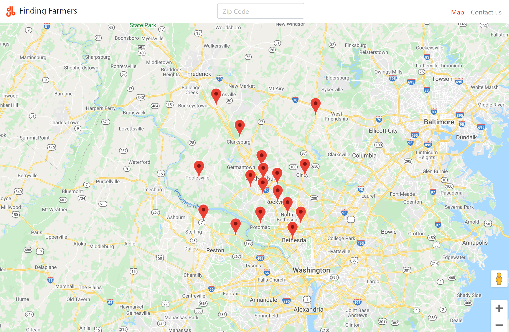
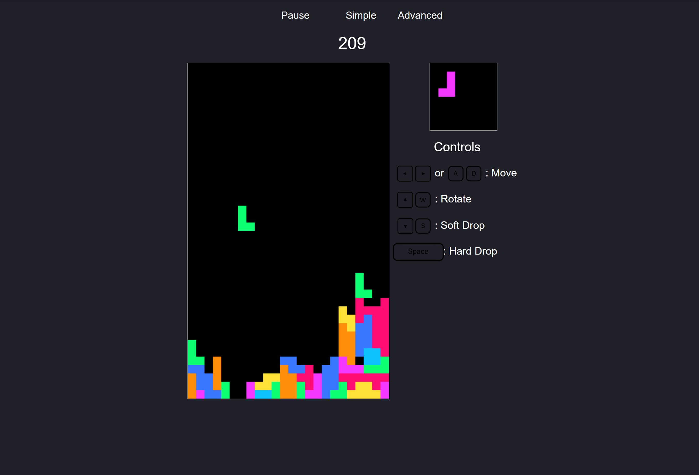

Note: none of the sites are currently online
Finding Farmers
Finding Farmers is a website that can help finding nearby Farmers Markets. We make use of location services by default, but also have a search function that allows users to look for markets anywhere in the United States! A Contact Us page to available to get in touch with the developers as well.
Yelp Camp

Yelp Camp is essentially a Yelp-clone, but for campgrounds. It allows anyone to search for and view campgrounds, as well as the comments that have been made on them. Users can add their own campgrounds and comments after they register and sign-in. This is my most in depth project, in terms of the backend functionality.
Image Gallery

A gallery page made to showcase high quality images. This page uses a responsive Masonry Grid to line up the photos in clean, even columns on any device size. Images display info when hovered and can be viewed in higher resolution when clicked.
Tetris
The classic game, Tetris! Features simple and advanced game modes, a pause/play button, and a scorekeeper. Controls are also provided.